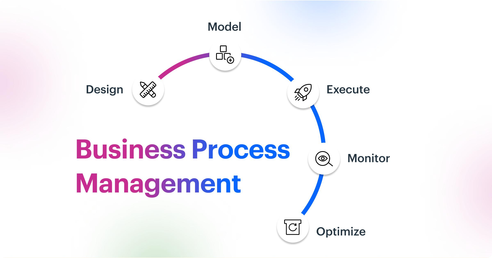

O que é PMBOK?
O PMBOK (Project Management Body of Knowledge) é um guia de boas práticas criado pelo PMI (Project Management Institute) para auxiliar no gerenciamento eficiente de projetos em diversas áreas.
O guia reúne processos, princípios e técnicas utilizados mundialmente para melhorar o planejamento, execução, monitoramento e encerramento de projetos.
Importância do PMBOK
O PMBOK ajuda organizações a reduzirem riscos, melhorarem a comunicação entre equipes e aumentarem as chances de sucesso dos projetos.
Além disso, ele oferece uma linguagem padronizada para o gerenciamento, facilitando o alinhamento entre profissionais, empresas e clientes.

Vídeo Explicativo
O vídeo abaixo apresenta uma introdução ao PMBOK e aos conceitos de gerenciamento de projetos.
Conclusão
O PMBOK é uma das principais referências mundiais em gerenciamento de projetos. Seu objetivo é fornecer boas práticas e princípios capazes de auxiliar equipes e organizações na entrega de projetos com maior qualidade, eficiência e segurança.
Dessa forma, o guia contribui para o planejamento adequado, redução de falhas e melhoria contínua dos processos organizacionais.